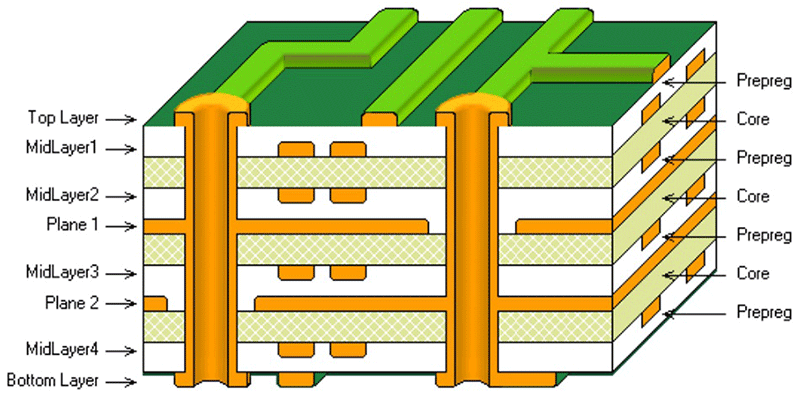
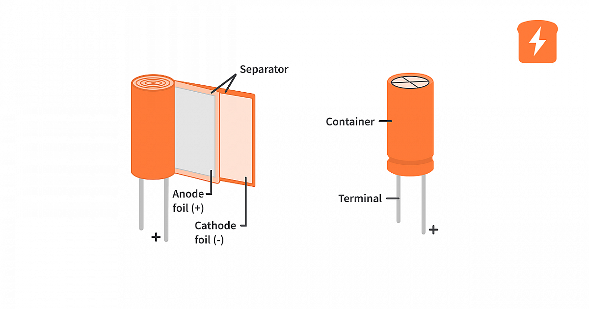

What is Voltage?
Definition:
Voltage is the measure of electric potential difference between two points in a circuit.
It represents the amount of energy that each electric charge would have as it moves between
these two points.
I- Conceptual Understanding:
1-Analogy:
Think of voltage like the height of a hill in a landscape. Just as a
ball
rolling down
a hill gains speed because of
the height (potential energy), electrical charges move because of the difference in voltage between
two points. The higher the voltage, the greater the "push" or energy available to move
the charges.
2-Role in a Circuit:
Voltage acts as the driving force that pushes electric charges through a circuit. Without voltage,
there would be no movement of charges, and thus, no electric current.
Measurement:
Voltage is measured in volts (V). One volt is defined as the potential difference that
will
cause one ampere of current to flow through a resistance of one ohm.
II- Common sources of voltage include:
1-Batteries:
Provide a fixed voltage that drives current through electronic devices.
Power Supplies: Convert electrical energy from the mains (wall outlet) into a specific voltage
for use in various devices.
III-Voltage in Action:
Example: In a simple flashlight:
The battery provides a certain voltage (e.g., 1.5 volts).
This voltage creates an electric field that pushes the electric charges (electrons)
through the wires.
As the charges flow through the light bulb, they provide energy that makes the bulb light up.
Practical Impact:
Voltage determines how much energy is available to move charges. Different devices require
different voltages to operate correctly. For instance,a small LED light might need 3 volts ,
while a larger appliance might need 120 volts or more.
Visualizing Voltage !!!!:
Water Tank Analogy: Imagine a water tank at different heights. The higher the
tank, the more
water pressure (potential energy) you have. In the same way, higher voltage provides more
"push" to move electric charges. like this images.
.png)
Electrical Circuit:
In a circuit, voltage is represented as a difference in potential energy
between two points. For example, in a simple circuit with a battery, one terminal has a higher
potential (positive) and the other a lower potential (negative). The voltage between these
terminals is what causes current to flow.
sources:
What is Electric Current?
Definition:
Electric current is the flow of electric charge through a conductor
. It represents how
many charges
(usually electrons)
are moving through a circuit per unit of time.
I-Conceptual Understanding:
Analogy:
Think of electric current like water flowing through a pipe. Just as
the flow
rate of water
tells you how much water is moving through the pipe,the electric current tells you how much
electric
charge is flowing through a wire or circuit.
Measurement:
Electric current is measured in amperes (A). One ampere is defined as the flow of one coulomb of charge
per second.
II-Types of Current:
1-Direct Current (DC):
The electric charge flows in one direction only. Example: batteries
and DC power
supplies.
2-Alternating Current (AC):
The electric charge periodically changes direction. Example:
household
electricity from the power grid.
Role in a Circuit:
Current is what powers electrical devices. When you turn on a light switch, it allows current
to flow
through the circuit, powering the light bulb.
III-Practical Impact:
1-Current Rating:
Electrical components have a maximum current rating Exceeding this rating
can cause
overheating or damage. For example, a light bulb designed for 0.5 amps should not be used with a current
exceeding that value.
Electrical Circuit: In a circuit, current flows from the positive side
of the
power source
(e.g.,
battery) through the circuit components (like resistors and bulbs) and returns to the negative side of
the power source.
Understanding current is crucial for working with and designing electrical circuits, as it helps ensure
that components are used within their safe operating limits and that circuits function correctly.
Visualizing Electric Current:
Water Flow Analogy:
Imagine a pipe with water flowing through it. The rate at which water flows through
the pipe is similar to how electric current flows through a wire. Just as the amount of water flowing is
measured in liters per second, electric current is measured in amperes.
sources:
Inductor: Understanding Its Functionality
Definition:
An inductor is a passive electronic component that stores energy in a
magnetic field when an electric current passes through it. It primarily consists of a coil of wire
that may be wound around a core made of air or a magnetic material.
I - Key Characteristics:
1. Inductance:
Inductance is the property of an inductor that quantifies its ability to resist changes in
current. It is measured in Henrys (H). A higher inductance value means the inductor can store more
energy.
2. Energy Storage:
An inductor stores energy in its magnetic field when current flows through it. This energy can
be released when the current changes or stops, making inductors useful in applications like filters
and transformers.
3. Self-Induction:
Self-induction refers to the inductor's ability to induce voltage in itself as the current
through the coil changes. This phenomenon is crucial for the inductor's operation in AC circuits.
II - Applications of Inductors:
1. Filters:
Inductors are used in filters to block AC signals while allowing DC signals to pass, or to
filter out specific frequencies in signal processing.
2. Transformers:
In transformers, inductors are used to transfer energy between circuits via mutual induction,
facilitating voltage conversion in power supply systems.
3. Energy Storage:
In power supplies, inductors store energy temporarily and help smooth out fluctuations in
current, enhancing stability and performance.
III - Inductor Types:
1. Air Core Inductor:
This type uses air as its core, ideal for high-frequency applications due to minimal energy
loss.
2. Iron Core Inductor:
An iron core increases the inductance, making it suitable for low-frequency applications like
power transformers.
3. Ferrite Core Inductor:
Ferrite cores offer high magnetic permeability, commonly used in RF applications due to their
effective high-frequency performance.
Visualizing Inductor Concepts

Sources:
Formulas

SI Prefixes Table
| Prefix |
Symbol |
Multiplier |
Power of Ten |
| milli |
m |
1/1,000 |
10-3 |
| micro |
µ |
1/1,000,000 |
10-6 |
| nano |
n |
1/1,000,000,000 |
10-9 |
Current and Voltage in an Inductor

How much induced voltage will be produced by the inductor depends upon the rate of current change.
In our
tutorial about Electromagnetic Induction, Lenz’s Law stated that: “the direction of an induced emf is
such that it will always opposes the change that is causing it”. In other words, an induced emf will
always OPPOSE the motion or change which started the induced emf in the first place.
So with a decreasing current the voltage polarity will be acting as a source and with an increasing
current the voltage polarity will be acting as a load. So for the same rate of current change through
the coil, either increasing or decreasing the magnitude of the induced emf will be the same.
Tutorial Example No1
Tutorial Example No1
A steady state direct current of 4 ampere passes through a solenoid coil of 0.5H. What would be
the
average back emf voltage induced in the coil if the switch in the above circuit was opened for 10mS and
the current flowing through the coil dropped to zero ampere.
Power in an Inductor:
We know that an inductor in a circuit opposes the flow of current, ( i ) through it because the
flow of this current induces an emf that opposes it, Lenz’s Law. Then work has to be done by the
external battery source in order to keep the current flowing against this induced emf. The instantaneous
power used in forcing the current, ( i ) against this self-induced emf, ( VL ) is given from above as:


The Energy Stored
When power flows into an inductor, energy is stored in its magnetic field. When the current
flowing through the inductor is increasing and di/dt becomes greater than zero, the instantaneous power
in the circuit must also be greater than zero, ( P > 0 ) ie, positive which means that energy is being
stored in the inductor.
Likewise, if the current through the inductor is decreasing and di/dt is less than zero then the
instantaneous power must also be less than zero, ( P < 0 ) ie, negative which means that the inductor
is returning energy back into the circuit. Then by integrating the equation for power above, the total
magnetic energy which is always positive, being stored in the inductor is therefore given as:

Where: W is in joules, L is in Henries and i is in Amperes
Diode: Understanding Its Functionality
Definition:
A diode is a semiconductor device that allows current to flow in one direction only,
acting as a one-way valve for electric current. It has two terminals: the anode and the cathode.
I - Key Characteristics:
1. Forward Bias:
In forward bias, the anode is connected to the positive terminal of the power supply, and the cathode
to the negative. This allows current to flow through the diode.
2. Reverse Bias:
In reverse bias, the anode is connected to the negative terminal of the power supply, and the cathode
to the positive. This blocks current flow, except for a small leakage current.
3. Forward Voltage Drop:
When conducting, diodes have a voltage drop across them, typically around 0.7V for silicon diodes and
0.3V for germanium diodes.
II - Applications of Diodes:
1. Rectification:
Diodes are commonly used in rectifiers to convert AC (alternating current) to DC (direct current) in
power supplies.
2. Signal Demodulation:
Diodes are used in radio receivers to demodulate AM (amplitude modulated) signals.
3. Voltage Regulation:
Zener diodes are used for voltage regulation, maintaining a constant output voltage despite changes in
input voltage or load conditions.
III - Types of Diodes:
1. Standard Diode:
The most common type, used for general-purpose rectification.
2. Zener Diode:
Designed to allow current to flow in reverse once a specific breakdown voltage is reached, used for
voltage regulation.
3. Light Emitting Diode (LED):
Emits light when forward-biased, used in displays and lighting.
4. Schottky Diode:
Has a low forward voltage drop and fast switching speed, used in high-frequency applications.
Diode Characteristics Table
| Characteristic |
Standard Diode |
Zener Diode |
LED |
Schottky Diode |
| Forward Voltage Drop |
0.7V (Si) |
0.7V (Si) |
1.8-3.3V |
0.3V-0.5V |
| Reverse Breakdown Voltage |
Varies |
Specific |
N/A |
Varies |
| Application |
Rectification |
Voltage Regulation |
Lighting |
High Frequency |
| Switching Speed |
Moderate |
Moderate |
Fast |
Very Fast |
Visualizing Diode Concepts
Sources:
Transistor: Understanding Its Functionality
Definition:
A transistor is a semiconductor device used to amplify or switch electronic signals
and electrical power. It is composed of three layers of semiconductor material and has three terminals: the
emitter, the base, and the collector.
I - Key Characteristics:
1. Bipolar Junction Transistor (BJT):
The BJT has three terminals: emitter, base, and collector. It comes in two types: NPN and PNP, which
differ in the arrangement of their semiconductor layers. The BJT is used for amplification and switching.
2. Field-Effect Transistor (FET):
The FET has three terminals: source, gate, and drain. It controls current flow with an electric field.
Types include Junction FET (JFET) and Metal-Oxide-Semiconductor FET (MOSFET). FETs are known for their high
input impedance and are used in switching and amplifying signals.
3. Operation:
In a transistor, a small current applied to the base (or gate) controls a larger current flowing
between the collector and emitter (or drain and source). This property allows transistors to amplify
signals.
II - Applications of Transistors:
1. Amplification:
Transistors are widely used in amplifiers to boost signal strength in audio equipment, radios, and
televisions.
2. Switching:
In digital circuits, transistors act as switches, turning devices on or off. They are fundamental
components in logic gates and memory cells.
3. Signal Processing:
Transistors are used in various signal processing applications, including modulation and demodulation
in communication systems.
III - Transistor Types:
1. Bipolar Junction Transistor (BJT):
In a BJT, the current is carried by both electrons and holes. It has three regions: emitter, base, and
collector. BJTs are used in analog and digital circuits for amplification and switching.
2. Field-Effect Transistor (FET):
In a FET, the current is carried by either electrons or holes, depending on the type of FET. It has
three terminals: source, gate, and drain. FETs are used in applications requiring high input impedance and
low noise.
Visualizing Transistor Concepts

Sources:
Transistor Characteristics Table
| Characteristic |
Common Base |
Common Emitter |
Common Collector |
| Input Impedance |
Low |
Medium |
High |
| Output Impedance |
Very High |
High |
Low |
| Phase Shift |
0° |
180° |
0° |
| Voltage Gain |
High |
Medium |
Low |
| Current Gain |
Low |
Medium |
High |
| Power Gain |
Low |
Very High |
Medium |
Bipolar Transistor Summary:
Then to summarise, the behaviour of the bipolar transistor in each one of the above circuit configurations
is very different and produces different circuit characteristics with regards to input impedance, output
impedance and gain whether this is voltage gain, current gain or power gain and this is summarised in the
table below.
Integrated Circuit (IC): A Comprehensive Overview
Definition:
An Integrated Circuit (IC) is a set of electronic circuits on a small flat piece (or
"chip") of semiconductor material, usually silicon. ICs are the fundamental building blocks of modern
electronic devices, allowing complex functions to be achieved in compact and efficient packages.
I - Key Characteristics:
1. Miniaturization:
ICs allow thousands to millions of transistors to be packed into a tiny chip, enabling powerful
computing and electronic functions in small form factors.
2. Cost-Effectiveness:
Due to mass production, ICs are cheaper than assembling equivalent circuits from discrete components.
3. Reliability:
ICs have fewer connection points and are less susceptible to failure, enhancing the reliability of
electronic devices.
II - Applications of ICs:
1. Computing:
ICs are the backbone of microprocessors, memory chips, and other computing hardware.
2. Communication:
ICs are used in telecommunications devices, modems, routers, and mobile phones.
3. Consumer Electronics:
ICs power devices like TVs, cameras, and game consoles.
4. Industrial and Automotive:
ICs are used in automation, control systems, and automotive electronics.
III - Types of ICs:
1. Analog ICs:
Used for processing analog signals. Common examples include operational amplifiers, voltage
regulators, and audio ICs.
2. Digital ICs:
Used for processing digital signals. Examples include microprocessors, memory chips, and digital
signal processors (DSPs).
3. Mixed-Signal ICs:
Combine analog and digital circuits on a single chip, used in devices like data converters and
clock/timing ICs.
IC Characteristics Table
| Characteristic |
Analog ICs |
Digital ICs |
Mixed-Signal ICs |
| Signal Type |
Analog |
Digital |
Both |
| Applications |
Amplifiers, Filters |
Processors, Logic Gates |
Converters, Communication |
| Complexity |
Low to Medium |
Medium to High |
High |
| Power Consumption |
Varies |
Usually Lower |
Moderate |
Visualizing IC Concepts
Sources:
Light Emitting Diode (LED): An In-Depth Look
Definition:
A Light Emitting Diode (LED) is a semiconductor device that emits light when an
electric current passes through it. LEDs are used in a wide range of applications due to their efficiency,
durability, and versatility.
I - Key Characteristics:
1. Light Emission:
LEDs emit light through electroluminescence when electrons recombine with holes in the semiconductor
material, releasing energy in the form of photons.
2. Color Variability:
The color of the emitted light depends on the semiconductor material used. Common colors include red,
green, blue, and white.
3. Efficiency:
LEDs are highly energy-efficient compared to traditional incandescent bulbs, converting a higher
percentage of electrical energy into light.
II - Applications of LEDs:
1. Display Technology:
LEDs are used in displays for televisions, computer monitors, and digital billboards due to their
brightness and color accuracy.
2. Lighting:
LEDs are used in various lighting applications, including household lighting, streetlights, and
automotive headlights, offering longer life and lower power consumption.
3. Indicators and Signage:
LEDs are commonly used in indicator lights, traffic signals, and signage due to their visibility and
reliability.
4. Medical and Automotive:
In medical devices and automotive applications, LEDs provide precise and efficient illumination.
III - Types of LEDs:
1. Standard LEDs:
Used for general illumination and indicators, available in various colors and sizes.
2. High-Intensity LEDs:
Provide a higher brightness output and are used in applications requiring strong illumination.
3. RGB LEDs:
Combine red, green, and blue LEDs in a single package to create a wide range of colors.
4. Infrared LEDs:
Emit light in the infrared spectrum, used in remote controls and night-vision devices.
LED Characteristics Table
| Characteristic |
Standard LED |
High-Intensity LED |
RGB LED |
Infrared LED |
| Color |
Single Color |
Single Color |
Multicolor |
Infrared |
| Brightness |
Moderate |
High |
Variable |
Low |
| Power Consumption |
Low |
Higher |
Moderate |
Low |
| Applications |
Indicators, Lighting |
High-Power Lighting |
Color Displays |
Remote Controls, Night-Vision |
Visualizing LED Concepts

Sources:
Switches: An Overview
Definition:
A switch is an electrical component used to open or close a circuit, allowing or
interrupting the flow of electric current. Switches are used in a variety of applications to control
electrical devices and systems.
I - Key Characteristics:
1. Operation Mechanism:
Switches can be operated manually (e.g., toggle switches) or automatically (e.g., reed switches). The
mechanism determines how the switch controls the circuit.
2. Contact Configuration:
Switches have different contact configurations, such as single-pole single-throw (SPST), single-pole
double-throw (SPDT), and double-pole double-throw (DPDT). The configuration affects the number of circuits
the switch can control.
3. Ratings:
Switches are rated based on their maximum voltage and current carrying capacity. It is important to
choose a switch with ratings suitable for the application to ensure safety and reliability.
II - Types of Switches:
1. Toggle Switch:
A switch that changes state by moving a lever back and forth. Commonly used in household appliances
and electrical panels.
2. Push Button Switch:
Operated by pressing a button. They can be momentary (returning to the original position after
release) or latching (remaining in the new position).
3. Rocker Switch:
Features a rocking motion to switch between on and off positions. Often used in power strips and some
household appliances.
4. Slide Switch:
Controlled by sliding a knob or lever. Commonly found in small electronic devices and some power
tools.
5. Rotary Switch:
Allows the user to select from multiple positions by rotating a knob. Used in applications requiring
multiple settings, such as volume controls and mode selectors.
6. Reed Switch:
Operated by a magnetic field. Used in applications like proximity sensors and security systems.
III - Applications of Switches:
1. Lighting Control:
Switches are used to control the operation of lights in homes and buildings.
2. Appliances:
Switches control the operation of electrical appliances, such as fans, heaters, and kitchen devices.
3. Industrial Equipment:
In industrial settings, switches are used to control machinery and equipment.
4. Automotive:
Switches are used in vehicles to control features like windows, lights, and ignition systems.
Switch Characteristics Table
| Characteristic |
Toggle Switch |
Push Button Switch |
Rocker Switch |
Slide Switch |
Rotary Switch |
Reed Switch |
| Operation Mechanism |
Lever |
Button |
Rocking |
Sliding |
Rotating |
Magnetic |
| Contact Configuration |
SPST, SPDT |
SPST, SPDT |
SPST, SPDT |
SPST, SPDT |
SPST, DPDT |
SPST |
| Typical Applications |
Household, Panels |
Electronics, Appliances |
Power Strips, Appliances |
Small Devices |
Volume Controls, Mode Selectors |
Proximity Sensors, Security |
| Durability |
High |
Medium |
Medium |
Medium |
High |
High |
Visualizing Switch Concepts
Sources:
Batteries: An In-Depth Overview
Definition:
A battery is a device that stores and provides electrical energy through a chemical
reaction. Batteries are commonly used in a wide range of applications, from powering small electronic
devices to providing backup power for larger systems.
I - Key Characteristics:
1. Types of Batteries:
Batteries come in various types, including primary (non-rechargeable) and secondary (rechargeable).
Examples include alkaline, lithium, lead-acid, and nickel-metal hydride (NiMH) batteries.
2. Voltage and Capacity:
Batteries are characterized by their voltage (the electric potential difference) and capacity (the
amount of charge they can store, usually measured in milliampere-hours or ampere-hours).
3. Lifespan:
The lifespan of a battery depends on its type, usage, and storage conditions. Rechargeable batteries
generally have a limited number of charge cycles before their capacity degrades.
II - Types of Batteries:
1. Alkaline Battery:
A common type of primary battery known for its long shelf life and stable voltage. Typically used in
household devices.
2. Lithium Battery:
Known for its high energy density and long life. Often used in portable electronics and high-drain
devices.
3. Lead-Acid Battery:
A type of secondary battery commonly used in automotive applications and backup power systems.
4. Nickel-Metal Hydride (NiMH) Battery:
A type of rechargeable battery with a higher capacity than nickel-cadmium (NiCd) batteries. Used in a
variety of rechargeable devices.
5. Lithium-Ion Battery:
A popular rechargeable battery known for its high energy density and long life, used in laptops,
smartphones, and electric vehicles.
III - Applications of Batteries:
1. Portable Electronics:
Batteries power devices such as smartphones, tablets, and laptops.
2. Automotive:
Lead-acid batteries provide power for starting vehicles and running electrical systems.
3. Backup Power:
Batteries provide backup power for systems like uninterruptible power supplies (UPS) and emergency
lighting.
4. Renewable Energy:
Batteries store energy generated from renewable sources, such as solar or wind, for later use.
Battery Characteristics Table
| Characteristic |
Alkaline |
Lithium |
Lead-Acid |
NiMH |
Lithium-Ion |
| Type |
Primary |
Primary |
Secondary |
Secondary |
Secondary |
| Voltage |
1.5V |
3.0V |
12V |
1.2V |
3.7V |
| Capacity |
AA: 2000-3000mAh |
CR2032: 220mAh |
12V: 40-100Ah |
AA: 1800-2500mAh |
3000-3500mAh |
| Applications |
Household Devices |
Electronics, Cameras |
Automotive, Backup Power |
Rechargeable Devices |
Laptops, EVs |
| Lifespan |
1-2 Years |
5-10 Years |
3-5 Years |
3-5 Years |
2-5 Years |
Visualizing Battery Concepts
Sources:
Transformers: An In-Depth Overview
Definition:
A transformer is an electrical device that transfers electrical energy between two or
more circuits through electromagnetic induction. Transformers are used to increase (step up) or decrease
(step down) AC voltage levels in power systems.
I - Key Characteristics:
1. Working Principle:
Transformers operate on the principle of electromagnetic induction. When an alternating current (AC)
passes through the primary winding, it creates a magnetic field that induces a voltage in the secondary
winding.
2. Turns Ratio:
The voltage transformation ratio of a transformer is determined by the ratio of the number of turns in
the primary winding to the number of turns in the secondary winding. This ratio directly affects the output
voltage.
3. Efficiency:
Transformers are highly efficient, typically 95% or higher, as they minimize energy losses through
core losses and copper losses.
II - Types of Transformers:
1. Step-Up Transformer:
Increases the voltage from primary to secondary winding. Used in power generation to step up voltage
for efficient transmission over long distances.
2. Step-Down Transformer:
Decreases the voltage from primary to secondary winding. Commonly used in power distribution systems
to provide usable voltage levels for homes and businesses.
3. Isolation Transformer:
Provides electrical isolation between the primary and secondary windings, often used to protect
sensitive equipment from power surges and electrical noise.
4. Auto Transformer:
Has a single winding that acts as both the primary and secondary. Used for voltage adjustment in
various applications.
5. Toroidal Transformer:
Features a ring-shaped core that provides a compact design and reduces electromagnetic interference.
Often used in audio equipment and high-frequency applications.
III - Applications of Transformers:
1. Power Distribution:
Transformers are used to step down high voltages from power plants to levels suitable for residential
and commercial use.
2. Electrical Isolation:
Isolation transformers are used to separate different parts of electrical systems to enhance safety
and reduce noise.
3. Voltage Regulation:
Used in devices like voltage regulators to maintain a consistent output voltage despite variations in
input voltage.
4. Audio Equipment:
Toroidal transformers are used in audio systems to minimize noise and interference.
Transformer Characteristics Table
| Characteristic |
Step-Up Transformer |
Step-Down Transformer |
Isolation Transformer |
Auto Transformer |
Toroidal Transformer |
| Voltage Transformation |
Increase |
Decrease |
No Change |
Variable |
Variable |
| Turns Ratio |
Primary < Secondary |
Primary > Secondary |
1:1 |
Variable |
Variable |
| Core Type |
Laminate Core |
Laminate Core |
Laminate Core |
Single Winding |
Toroidal |
| Efficiency |
High |
High |
High |
High |
High |
| Typical Applications |
Power Transmission |
Power Distribution |
Safety Isolation |
Voltage Adjustment |
Audio Equipment |
Visualizing Transformer Concepts
Sources:
What is a Relay?
Definition:
A relay is an electrically operated switch used to control a circuit by a low-power signal or
multiple circuits by a single signal. It uses an electromagnet to mechanically operate a switch.
I- Conceptual Understanding:
1-Function:
Relays allow one circuit to switch another circuit, either for safety or control purposes.
They are essential in situations where it is necessary to control a large voltage or current with a
much smaller control signal.
2-Components:
A typical relay consists of an electromagnet, an armature, a spring, and a set of electrical
contacts. When an electric current passes through the coil, it generates a magnetic field that moves
the armature, changing the state of the contacts.
II- Common uses of relays include:
1-Automotive:
Relays are widely used in cars to control high-current circuits such as headlights, fuel
pumps, and horns.
2-Home Appliances:
In household devices, relays can be found in washing machines, microwaves, and heating systems
to manage high-power operations safely.
III-Relay in Action:
Example: In a starter motor of a car:
When the ignition switch is turned, a small current flows through the relay coil. The magnetic field
activates the relay's switch, allowing a larger current to flow to the starter motor, turning the
engine over.
Practical Impact:
Relays provide isolation between the control signal and the circuit being switched, protecting
sensitive components and improving system reliability. They enable remote control and automation in
many electronic and electrical systems.
Visualizing Relays:
Doorbell Analogy: Imagine pressing a doorbell switch. The small current from
your finger press energizes a relay, which closes the circuit to ring the bell. The relay separates
the control action from the higher voltage circuit operating the bell.
Electrical Circuit:
In a circuit, relays can be used to switch high-power devices with low-power signals, offering
a cost-effective and efficient solution for controlling complex electrical systems. They are crucial
for ensuring safety and managing electrical loads.

Sources:
Relay Pin Configuration
| Pin Number |
Pin Name |
Description |
| 1 |
Coil End 1 |
Used to trigger (On/Off) the Relay. Normally, one end is connected to 5V and the other end
to ground. |
| 2 |
Coil End 2 |
Used to trigger (On/Off) the Relay. Normally, one end is connected to 5V and the other end
to ground. |
| 3 |
Common (COM) |
Common is connected to one end of the load that is to be controlled. |
| 4 |
Normally Close (NC) |
The other end of the load is either connected to NO or NC. If connected to NC, the load
remains connected before trigger. |
| 5 |
Normally Open (NO) |
The other end of the load is either connected to NO or NC. If connected to NO, the load
remains disconnected before trigger. |
Features of 5-Pin 5V Relay
- Trigger Voltage: 5V DC
- Trigger Current: 70mA (Nominal current)
- Maximum AC Load Current: 10A @ 250/125V AC
- Maximum DC Load Current: 10A @ 30/28V DC
- Configuration: Compact 5-pin configuration with plastic moulding
- Operating Time: 10msec
- Release Time: 5msec
- Maximum Switching: 300 operating/minute (mechanically)
Oscillators: An In-Depth Overview
Definition:
An oscillator is an electronic circuit or device that generates a continuous,
periodic waveform, usually in the form of a sine wave, square wave, or triangle wave. Oscillators are
crucial in various electronic applications, including clocks, radios, and signal processing.
I - Key Characteristics:
1. Frequency:
The frequency of an oscillator is the rate at which it generates its waveform, measured in Hertz (Hz).
It determines the timing and signal characteristics in electronic systems.
2. Waveform Types:
Oscillators can produce various waveforms including sine waves, square waves, and triangle waves. Each
type is suited for different applications.
3. Stability:
The stability of an oscillator refers to its ability to maintain a consistent frequency over time and
under varying conditions.
II - Types of Oscillators:
1. LC Oscillator:
Uses an inductor (L) and capacitor (C) to generate oscillations. Commonly used in radio frequency
applications.
2. RC Oscillator:
Uses resistors (R) and capacitors (C) to produce oscillations. Often used in low-frequency
applications such as audio signal processing.
3. Crystal Oscillator:
Uses a quartz crystal to generate a precise frequency. Widely used in clocks, radios, and digital
devices due to its high stability.
4. Relaxation Oscillator:
Generates a waveform by charging and discharging a capacitor through a resistor. Used in timer
circuits and simple waveform generators.
5. Voltage-Controlled Oscillator (VCO):
The frequency of a VCO is controlled by an input voltage, making it useful in phase-locked loops and
frequency modulation applications.
III - Applications of Oscillators:
1. Clocks:
Oscillators provide the timing signals for digital clocks and microprocessors.
2. Radios:
Used in the generation of carrier waves and signal processing in radio communication systems.
3. Signal Processing:
Oscillators are essential in synthesizers and audio processing equipment to generate and modify
signals.
4. Frequency Generation:
Crystal and LC oscillators are used to generate precise frequencies for various electronic
applications.
Oscillator Characteristics Table
| Characteristic |
LC Oscillator |
RC Oscillator |
Crystal Oscillator |
Relaxation Oscillator |
VCO |
| Frequency Range |
High |
Low |
Very High |
Low to Medium |
Variable |
| Waveform Types |
Sine |
Square |
Sine |
Square/Triangle |
Sine/Square |
| Stability |
High |
Medium |
Very High |
Low |
Medium |
| Typical Applications |
RF Circuits |
Audio Processing |
Clocks, Radios |
Timer Circuits |
Phase-Locked Loops |
| Control Method |
Fixed Components |
Fixed Components |
Fixed Crystal |
Charging/Discharging |
Input Voltage |
Visualizing Oscillator Concepts
Sources:
Potentiometer: A Comprehensive Overview
Definition:
Potentiometer is a type of variable resistor used to adjust voltage levels in
electronic circuits. It allows for manual adjustment of resistance, thereby controlling the amount of
current flowing through the circuit. The basic structure consists of a resistive element and a wiper that
moves across the element to vary the resistance.
I - Key Components:
1. Resistive Element:
The core component that provides resistance. It is usually made of carbon or a conductive material.
2. Wiper:
A movable contact that slides across the resistive element. Adjusting the wiper changes the resistance
and therefore the output voltage.
3. Terminals:
Typically, a potentiometer has three terminals: one connected to each end of the resistive element and
one connected to the wiper.
II - Types of Potentiometers:
1. Rotary Potentiometers:
These are adjusted by rotating a knob or dial. They are commonly used in volume controls for audio
devices.
2. Linear Potentiometers:
These are adjusted by sliding a lever. They are often used in applications where linear motion is
preferred.
III - Applications:
1. Volume Control:
In audio equipment, potentiometers are used to adjust the volume levels.
2. Brightness Control:
Potentiometers adjust the brightness of displays and lights.
3. Adjustable Resistors:
In various electronic circuits, potentiometers are used to set and adjust resistance values for
calibration and control purposes.
Potentiometer Pin Configuration
| Pin Number |
Pin Name |
Description |
| 1 |
Terminal 1 |
One end of the resistive element connected to the first terminal. |
| 2 |
Wiper |
The moving contact that adjusts the resistance by varying the connection point along the
resistive element. |
| 3 |
Terminal 2 |
The other end of the resistive element connected to the second terminal. |
Features of Potentiometer
- Adjustable resistance range from zero to maximum resistance.
- Rotary or linear motion depending on type.
- Used for fine-tuning and calibration in electronic circuits.
- Can handle different power ratings based on the design.
- Provides variable voltage output based on the position of the wiper.
Visualizing a Potentiometer
Sources:
Fuses: An In-Depth Overview
Definition:
A fuse is a safety device used in electrical circuits to protect against
overcurrent conditions. It consists of a metal wire or strip that melts when the current exceeds a
specified limit, breaking the circuit and preventing damage to other components.
I - Key Characteristics:
1. Current Rating:
The current rating of a fuse indicates the maximum current it can carry continuously without
melting. Fuses are selected based on the normal operating current of the circuit.
2. Voltage Rating:
The voltage rating of a fuse specifies the maximum voltage it can safely interrupt. It ensures
that the fuse can handle the electrical potential without causing arcing or other issues.
3. Time-Current Characteristic:
Fuses have different response times to overcurrent conditions. Some fuses blow quickly
(fast-blow), while others have a time delay to tolerate temporary surges (slow-blow).
II - Types of Fuses:
1. Cartridge Fuse:
A cylindrical fuse used in a variety of applications, including household and industrial circuits.
It consists of a metal element enclosed in a glass or ceramic tube.
2. Glass Fuse:
A type of cartridge fuse with a transparent glass body, allowing visual inspection of the fuse
element. Commonly used in electronics and household appliances.
3. Ceramic Fuse:
Similar to glass fuses but with a ceramic body, providing higher current ratings and better
resistance to thermal and mechanical stress.
4. Resettable Fuse (Polyfuse):
A fuse that automatically resets after an overcurrent condition is cleared. Made from materials
that change resistance when heated, allowing it to recover once the current returns to normal.
5. Blade Fuse:
Commonly used in automotive applications, these fuses have two metal blades that plug into a
socket. They are available in various colors indicating different current ratings.
III - Applications of Fuses:
1. Electrical Protection:
Fuses protect circuits from overcurrent conditions, preventing damage to wiring and components.
2. Appliances:
Used in household and industrial appliances to safeguard against electrical faults and short
circuits.
3. Automotive:
Blade fuses are commonly used in vehicles to protect electrical systems from overloads.
4. Electronics:
Glass and ceramic fuses are used in electronic devices to prevent damage from excessive current.
Fuse Characteristics Table
| Characteristic |
Cartridge Fuse |
Glass Fuse |
Ceramic Fuse |
Resettable Fuse |
Blade Fuse |
| Body Type |
Cylindrical |
Glass Tube |
Ceramic Tube |
Polymeric |
Plastic with Metal Blades |
| Current Rating |
Varies |
Low to Medium |
Medium to High |
Varies |
Low to Medium |
| Voltage Rating |
Varies |
Low to Medium |
Medium to High |
Low to Medium |
Medium |
| Response Time |
Fast or Slow |
Fast |
Slow |
Self-Resetting |
Fast |
| Typical Applications |
Household, Industrial |
Electronics, Household |
Industrial, High-Current |
Electronics, Automotive |
Automotive |
Visualizing Fuse Concepts
Sources:
Breadboards: An In-Depth Overview
Definition:
A breadboard is a tool used for prototyping electronic circuits. It allows for
easy insertion and removal of components without the need for soldering. Breadboards are commonly used
by engineers and hobbyists to test and experiment with circuit designs before finalizing them on a
printed circuit board (PCB).
I - Key Characteristics:
1. Construction:
Breadboards are typically made of a plastic base with a grid of holes that connect internal metal
clips. Components are inserted into these holes to form temporary connections.
2. Layout:
Breadboards are divided into rows and columns, with power rails running along the edges for easy
access to power supply connections. The main area is used for placing and connecting components.
3. Reusability:
One of the main advantages of breadboards is their reusability. Components can be moved and
rearranged as needed, allowing for easy experimentation and modifications.
II - Types of Breadboards:
1. Solderless Breadboard:
The most common type, featuring a grid of holes and internal metal clips for making temporary
connections without soldering. Ideal for prototyping and testing circuits.
2. Solderable Breadboard:
Similar in appearance to solderless breadboards but designed to be soldered. Often used for
creating more permanent prototypes or low-volume production runs.
3. Mini Breadboard:
A smaller version of the standard breadboard, suitable for compact circuits or educational
purposes. It provides a more manageable size for simple projects.
III - Applications of Breadboards:
1. Prototyping:
Breadboards are primarily used to prototype and test electronic circuits before committing to a
final design.
2. Education:
Commonly used in educational settings to teach basic electronics and circuit design principles.
3. Debugging:
Breadboards provide a flexible environment for debugging and refining circuit designs.
4. Hobby Projects:
Ideal for electronics hobbyists to experiment with and build various circuits and projects.
Breadboard Characteristics Table
| Characteristic |
Solderless Breadboard |
Solderable Breadboard |
Mini Breadboard |
| Construction |
Plastic with metal clips |
Plastic with solderable pads |
Plastic with metal clips |
| Size |
Standard |
Standard |
Compact |
| Reusability |
High |
Medium |
High |
| Typical Applications |
Prototyping, Testing |
Permanent Prototypes |
Compact Projects, Education |
| Ease of Use |
Easy |
Moderate |
Easy |
Visualizing Breadboard Concepts
Sources:
Soldering Iron
Content about Soldering Irons.
Multimeter: An In-Depth Overview
Definition:
A multimeter is a versatile instrument used for measuring electrical parameters such
as voltage, current, and resistance. It is an essential tool in electronics and electrical work, providing
valuable information for diagnosing and troubleshooting electrical circuits.
I - Key Characteristics:
1. Measurement Functions:
Multimeters typically offer several measurement functions including voltage (both AC and DC), current
(both AC and DC), and resistance. Some advanced models also measure capacitance, frequency, and temperature.
2. Display:
Multimeters are equipped with a digital or analog display to show measurement readings. Digital
multimeters (DMMs) are more common and provide precise numerical readings, while analog multimeters use a
moving needle to indicate measurements.
3. Range Selection:
Most multimeters allow the user to select different measurement ranges to accommodate various values.
This helps in obtaining accurate readings for both small and large measurements.
II - Types of Multimeters:
1. Digital Multimeter (DMM):
Digital multimeters provide numerical readings on an LCD display. They are easy to read and typically
offer higher accuracy and more features compared to analog meters.
2. Analog Multimeter:
Analog multimeters use a needle and scale to display readings. They are less common today but can be
useful for certain applications and offer a visual indication of measurement trends.
3. Clamp Multimeter:
Clamp multimeters are designed for measuring current without having to disconnect the circuit. They
have jaws that clamp around a conductor to measure the magnetic field generated by the current flow.
III - Applications of Multimeters:
1. Troubleshooting:
Multimeters are essential for diagnosing electrical faults by measuring voltage, current, and
resistance in circuits.
2. Circuit Testing:
Used to verify and test electrical components and circuits during the design and development phase.
3. Maintenance:
Regular use of multimeters helps ensure the proper functioning and maintenance of electrical systems
and equipment.
4. Calibration:
Multimeters are used to calibrate and verify other measurement instruments to ensure accuracy.
Multimeter Characteristics Table
| Characteristic |
Digital Multimeter |
Analog Multimeter |
Clamp Multimeter |
| Display Type |
Digital LCD |
Analog Needle |
Digital LCD |
| Accuracy |
High |
Medium |
High |
| Measurement Functions |
Voltage, Current, Resistance, Capacitance, Frequency, Temperature |
Voltage, Current, Resistance |
Current, Voltage, Resistance |
| Ease of Use |
Easy |
Moderate |
Easy |
| Special Features |
Auto-Ranging, Backlight, Data Hold |
Analog Scale, Trend Indication |
Current Measurement Without Disconnecting |
Visualizing Multimeter Concepts
Sources:
Printed Circuit Board (PCB): An In-Depth Overview
Definition:
A Printed Circuit Board (PCB) is a flat board that physically supports and
electrically connects electronic components. PCBs are used in nearly all electronic devices, from simple
gadgets to complex machinery.
I - Key Characteristics:
1. Structure:
PCBs are typically made from a non-conductive substrate material, such as fiberglass or plastic, with
conductive pathways etched onto their surface. These pathways form the electrical connections between
components.
2. Layers:
PCBs can be single-sided (one layer of conductive material), double-sided (two layers), or
multi-layered (multiple layers) to accommodate more complex circuits. Multi-layer PCBs are used for
high-density and high-performance applications.
3. Components:
Electronic components like resistors, capacitors, and integrated circuits (ICs) are mounted onto the
PCB and connected via soldered joints. The design of a PCB determines the layout and placement of these
components.
II - PCB Design Process:
1. Schematic Design:
The design process starts with creating a schematic diagram that represents the electrical connections
and components in the circuit.
2. PCB Layout:
The schematic is then translated into a PCB layout, where the positions of components and the routing
of electrical traces are designed. Layout software is used to ensure that the design meets electrical and
mechanical requirements.
3. Fabrication:
The PCB layout is used to manufacture the physical board. This involves etching the conductive traces
onto the substrate and drilling holes for component mounting.
4. Assembly:
After fabrication, components are soldered onto the PCB. This can be done manually or using automated
machines for high-volume production.
III - Applications of PCBs:
1. Consumer Electronics:
PCBs are found in devices like smartphones, tablets, and computers, providing the necessary electrical
connections for their operation.
2. Automotive:
Modern vehicles use PCBs in various systems, including engine control units, infotainment systems, and
safety features.
3. Industrial Equipment:
PCBs are used in machinery, control systems, and instrumentation to ensure reliable performance and
integration.
PCB Types Table
| Type |
Layers |
Applications |
Advantages |
| Single-Sided PCB |
1 |
Simple electronic devices |
Cost-effective, easy to manufacture |
| Double-Sided PCB |
2 |
More complex circuits |
Improved circuit density, more components |
| Multi-Layer PCB |
3 or more |
High-density, high-performance applications |
High circuit density, reduced size |
Visualizing PCB Concepts

Sources:
Ohm's Law: Understanding Voltage, Current, and Resistance
Definition:
Ohm's Law states that the current (I) flowing through a conductor between two points
is directly proportional to the voltage (V) across the two points and inversely proportional to the
resistance (R) of the conductor. The law is mathematically expressed as:
V = I × R
where:
- V is the voltage (in volts, V)
- I is the current (in amperes, A)
- R is the resistance (in ohms, Ω)
I - Key Concepts:
1. Voltage (V):
Voltage is the potential difference between two points in an electrical circuit. It provides the
energy needed to move electric charges through the circuit.
2. Current (I):
Current is the flow of electric charge through a conductor. It is measured in amperes and represents
the amount of charge passing through a point in the circuit per unit time.
3. Resistance (R):
Resistance is the opposition to the flow of electric current through a conductor. It is measured in
ohms and depends on the material, length, and cross-sectional area of the conductor.
II - Practical Examples:
1. Simple Circuit:
In a basic circuit with a battery and a resistor, Ohm's Law helps determine the current flowing
through the resistor when the voltage is known.
2. Calculating Resistance:
If the voltage and current in a circuit are known, Ohm's Law can be used to calculate the resistance
of the circuit.
III - Ohm's Law in Practice:
1. Measuring Voltage:
Using a multimeter to measure the voltage across a component can help ensure that the circuit is
operating correctly.
2. Designing Circuits:
Engineers use Ohm's Law to design circuits with specific current, voltage, and resistance values to
meet the desired performance requirements.
Ohm's Law Calculation Examples
| Calculation |
Formula |
Example |
| Voltage (V) |
V = I × R |
If I = 2 A and R = 10 Ω, then V = 2 × 10 = 20 V |
| Current (I) |
I = V / R |
If V = 20 V and R = 10 Ω, then I = 20 / 10 = 2 A |
| Resistance (R) |
R = V / I |
If V = 20 V and I = 2 A, then R = 20 / 2 = 10 Ω |
Visualizing Ohm's Law

Sources:
Kirchhoff's Laws: A Comprehensive Overview
Introduction:
Kirchhoff's Laws are two fundamental principles used in electrical engineering to
analyze complex electrical circuits. They are named after the German physicist Gustav Kirchhoff and are
essential for understanding the behavior of circuits.
I - Kirchhoff's Current Law (KCL):
Definition:
Kirchhoff's Current Law states that the total current entering a junction in an electrical circuit
is equal to the total current leaving the junction. This principle is based on the conservation of
electric charge.
Mathematical Expression:
\[ \sum I_{\text{in}} = \sum I_{\text{out}} \]
Example:
In a junction with three wires, if the currents flowing into the junction are 3A and 2A, then the
current flowing out of the junction must be 5A.
II - Kirchhoff's Voltage Law (KVL):
Definition:
Kirchhoff's Voltage Law states that the sum of the electrical potential differences (voltages)
around any closed loop or mesh in a circuit is equal to zero. This law is based on the conservation of
energy.
Mathematical Expression:
\[ \sum V = 0 \]
Example:
In a closed loop with three components where the voltages are 5V, 3V, and -8V, the sum of these
voltages will be zero: \( 5V + 3V - 8V = 0V \).
Kirchhoff's Law Applications
1. Circuit Analysis:
Kirchhoff's Laws are used to determine unknown values of current and voltage in electrical
circuits. They are fundamental in solving complex circuits involving multiple loops and junctions.
2. Network Theorems:
These laws are foundational for various network theorems such as Thevenin's and Norton's theorems,
which simplify circuit analysis.
3. Practical Engineering:
Engineers use Kirchhoff's Laws in designing and analyzing circuits for various applications,
including power distribution, signal processing, and electronic devices.
Visualizing Kirchhoff's Laws
Sources:
Understanding Resistance
Definition:
Resistance is a measure of the opposition that a substance offers to the flow of electric current. It
determines how much current will flow through a component when a voltage is applied across it.
I - Formula for Resistance:
Ohm's Law:
Resistance (\( R \)) can be calculated using Ohm's Law, which is given by:
\[ R = \frac{V}{I} \]
Where:
\( V \) = Voltage (in volts)
\( I \) = Current (in amperes)
II - Types of Resistance:
1. Fixed Resistors:
Have a constant resistance value and are commonly used to limit current or set a bias point in
circuits.
2. Variable Resistors:
Can adjust their resistance value, such as potentiometers and rheostats, used for tuning and control
purposes.
III - Applications of Resistance:
1. Current Limiting:
Resistors are used to limit the amount of current flowing through a circuit, protecting sensitive
components.
2. Voltage Division:
Resistors are used in voltage divider circuits to provide different voltage levels.
3. Biasing:
In transistor circuits, resistors are used to set the operating point of the transistor.
Resistance Table
| Prefix |
Symbol |
Multiplier |
Power of Ten |
| milli |
m |
1/1,000 |
10-3 |
| micro |
µ |
1/1,000,000 |
10-6 |
| nano |
n |
1/1,000,000,000 |
10-9 |
Visualizing Resistance

Sources:
Understanding Power
Definition:
Power is the rate at which energy is transferred or converted. In electrical terms, it is the rate at
which electrical energy is converted into other forms of energy, such as heat, light, or mechanical work.
I - Formula for Power:
Power Formula:
Power (\( P \)) can be calculated using the following formula:
\[ P = V \times I \]
Where:
\( V \) = Voltage (in volts)
\( I \) = Current (in amperes)
Alternative Formula:
Power can also be calculated using resistance (\( R \)) and current (\( I \)):
\[ P = I^2 \times R \]
Or using voltage (\( V \)) and resistance (\( R \)):
\[ P = \frac{V^2}{R} \]
II - Types of Power:
1. Real Power:
The actual power consumed by a circuit or device to perform work. Measured in watts (W).
2. Reactive Power:
The power stored and released by reactive components (inductors and capacitors) in a circuit. Measured
in volt-amperes reactive (VAR).
3. Apparent Power:
The total power in an AC circuit, combining real and reactive power. Measured in volt-amperes (VA).
III - Applications of Power:
1. Electrical Appliances:
Power ratings determine the amount of energy consumed by appliances like refrigerators, computers, and
air conditioners.
2. Power Generation:
Power plants generate electrical power that is distributed to homes and industries.
3. Energy Efficiency:
Power calculations help in designing energy-efficient systems and reducing energy consumption.
Power Conversion Table
| Unit |
Symbol |
Equivalent |
| Watt |
W |
1 W = 1 Joule/second |
| Kilowatt |
kW |
1 kW = 1,000 Watts |
| Megawatt |
MW |
1 MW = 1,000,000 Watts |
Visualizing Power
Sources:
Understanding Frequency
Definition:
Frequency is the number of occurrences of a repeating event per unit of time. In the context of waves
and oscillations, it represents how many cycles occur in one second. The standard unit of frequency is the
Hertz (Hz).
I - Formula for Frequency:
Frequency Formula:
Frequency (\( f \)) can be calculated using the following formula:
\[ f = \frac{1}{T} \]
Where:
\( T \) = Period (time for one cycle in seconds)
Alternative Formula:
Frequency can also be related to the angular frequency (\( \omega \)):
\[ f = \frac{\omega}{2 \pi} \]
II - Types of Frequency:
1. Audio Frequency:
The range of frequencies that can be heard by the human ear, typically from 20 Hz to 20 kHz.
2. Radio Frequency:
The range of frequencies used for communication and broadcasting, typically from 3 kHz to 300 GHz.
3. Modulation Frequency:
The frequency at which the amplitude, frequency, or phase of a carrier signal is varied to encode
information.
III - Applications of Frequency:
1. Communication Systems:
Different frequencies are used for various types of communication, including radio, TV, and cellular
networks.
2. Signal Processing:
Frequency analysis is used to filter and process signals in electronics and telecommunications.
3. Audio Equipment:
Audio equipment uses frequency to adjust sound quality and to produce audio signals.
Frequency Conversion Table
| Unit |
Symbol |
Equivalent |
| Hertz |
Hz |
1 Hz = 1 cycle/second |
| Kilohertz |
kHz |
1 kHz = 1,000 Hz |
| Megahertz |
MHz |
1 MHz = 1,000,000 Hz |
Visualizing Frequency
Sources:
<
Understanding Amplitude
Definition:
Amplitude refers to the maximum extent of a vibration or oscillation, measured from the position
of equilibrium. In a wave, it represents the peak value of the wave's displacement from its mean
position. Amplitude is a key parameter in describing the strength or intensity of a wave signal.
I - Formula for Amplitude:
Amplitude Formula:
For a sinusoidal wave, amplitude (\( A \)) can be expressed as:
\[ A = \frac{V_{peak}}{2} \]
Where:
\( V_{peak} \) = Peak voltage of the signal
In terms of displacement:
Amplitude can also be given as:
\[ A = \frac{1}{2} (V_{max} - V_{min}) \]
Where:
\( V_{max} \) = Maximum value
\( V_{min} \) = Minimum value
II - Types of Amplitude:
1. Peak Amplitude:
The maximum value reached by the wave in one cycle. It measures the greatest deviation from the
mean position.
2. Root Mean Square (RMS) Amplitude:
A statistical measure of the magnitude of a varying quantity. For a sinusoidal wave, RMS amplitude
is equal to the peak amplitude divided by the square root of 2.
3. Average Amplitude:
The average of the absolute values of the wave’s amplitude over a cycle.
III - Applications of Amplitude:
1. Audio Signals:
Amplitude affects the loudness of sound. Higher amplitude corresponds to louder sounds.
2. Communication Systems:
Amplitude modulation (AM) uses the amplitude of a carrier wave to encode information.
3. Signal Processing:
Amplitude is used in various signal processing techniques to analyze and manipulate signals.
Amplitude Conversion Table
| Unit |
Symbol |
Equivalent |
| Peak Amplitude |
A |
Maximum value of the wave |
| RMS Amplitude |
ARMS |
\[ A_{RMS} = \frac{A_{peak}}{\sqrt{2}} \] |
| Average Amplitude |
Aavg |
Average of the absolute values of the wave |
Visualizing Amplitude
Sources:
Understanding Capacitors
Definition:
A capacitor is an electronic component that stores and releases electrical energy in a circuit. It
consists of two conductive plates separated by an insulating material known as a dielectric. The ability of
a capacitor to store charge is measured in farads (F).
I - Capacitor Basics:
Capacitance:
The capacitance (\( C \)) of a capacitor is defined as the amount of charge (\( Q \)) it can store per
volt (\( V \)) applied across it:
\[ C = \frac{Q}{V} \]
Where:
\( C \) = Capacitance in farads (F)
\( Q \) = Charge in coulombs (C)
\( V \) = Voltage in volts (V)
Energy Stored:
The energy (\( E \)) stored in a capacitor can be calculated using:
\[ E = \frac{1}{2} C V^2 \]
II - Types of Capacitors:
1. Ceramic Capacitors:
These are widely used due to their small size and stability. They are suitable for high-frequency
applications.
2. Electrolytic Capacitors:
These capacitors have higher capacitance values and are used for filtering and smoothing applications
in power supplies.
3. Film Capacitors:
These capacitors use a thin plastic film as the dielectric and are known for their reliability and
precision.
4. Tantalum Capacitors:
Known for their stability and long life, these capacitors are used in high-reliability applications.
III - Applications of Capacitors:
1. Power Supply Filtering:
Capacitors are used to smooth out fluctuations in power supply voltages, reducing ripple and
noise.
2. Signal Coupling:
They are used to pass AC signals while blocking DC components, which is useful in audio and radio
circuits.
3. Timing Circuits:
Capacitors are integral to timing circuits, such as those in oscillators and timers.
Capacitor Characteristics
| Characteristic |
Value |
| Capacitance Range |
From picofarads (pF) to farads (F) |
| Voltage Rating |
Varies by type; typically from a few volts to several kilovolts |
| Temperature Stability |
Varies by type; generally from -55°C to +125°C |
| Equivalent Series Resistance (ESR) |
Low in ceramic and film capacitors; higher in electrolytic capacitors |
Visualizing Capacitors


Sources:
Understanding Conductance
Definition:
Conductance is a measure of how easily electricity flows through a material. It is the reciprocal of
resistance and indicates the capacity of a component or circuit to allow electric current to pass through
it. Conductance is measured in siemens (S).
I - Formula for Conductance:
Conductance Formula:
Conductance (\( G \)) is calculated as the reciprocal of resistance (\( R \)):
\[ G = \frac{1}{R} \]
Where:
\( G \) = Conductance in siemens (S)
\( R \) = Resistance in ohms (Ω)
II - Units of Conductance:
The SI unit of conductance is the siemens (S), which is equivalent to the reciprocal of the ohm (Ω).
One siemens is equal to one ampere per volt (A/V).
III - Factors Affecting Conductance:
1. Material:
Conductors have high conductance, while insulators have low conductance. Metals like copper and
aluminum are excellent conductors.
2. Temperature:
For most conductors, conductance decreases with an increase in temperature, whereas for
semiconductors, conductance increases with temperature.
3. Cross-sectional Area and Length:
A larger cross-sectional area increases conductance, while a longer path decreases it.
IV - Applications of Conductance:
1. Electrical Engineering:
Conductance is used in designing circuits to ensure components are correctly sized to carry electrical
currents.
2. Semiconductor Devices:
Conductance helps in analyzing and optimizing the performance of semiconductor devices like
transistors and diodes.
3. Electrochemical Applications:
Conductance is crucial in electrochemical processes, such as electrolysis and battery operation.
Conductance Conversion Table
| Unit |
Symbol |
Equivalent |
| Siemens |
S |
1 A/V |
| Reciprocal Ohms |
Ω-1 |
1/Ω |
| Mhos |
Mhos |
1 A/V |
Visualizing Conductance
Sources:
Understanding Ground in Electrical Circuits
Definition:
In electrical circuits, "ground" refers to a reference point of zero voltage. It acts as a common
return path for electric current and serves as a reference point for measuring and stabilizing voltages
within the circuit.
I - Importance of Grounding:
1. Safety:
Grounding provides a safe path for excess current to dissipate into the earth, preventing electric
shock and equipment damage.
2. Voltage Stabilization:
Grounding helps maintain a stable voltage level in a circuit by providing a common reference
point.
3. Noise Reduction:
Proper grounding minimizes electrical noise and interference, improving the performance of sensitive
equipment.
II - Types of Grounding:
1. Earth Ground:
This type of grounding connects the electrical system to the physical earth using conductive rods or
plates, providing a direct path for fault currents.
2. Chassis Ground:
Used in electronic devices, chassis ground connects the circuit to the device's metal casing,
providing a protective shield against electrical faults.
3. Signal Ground:
Used in communication systems, signal ground serves as a reference point for the signals being
transmitted or received, ensuring consistent signal levels.
III - Applications of Grounding:
1. Electrical Wiring:
Grounding is essential in residential and industrial wiring to ensure safety and compliance with
electrical codes.
2. Electronic Devices:
Grounding is used to prevent static discharge and protect components from damage.
3. Communication Systems:
Proper grounding improves signal quality and reduces electromagnetic interference in communication
equipment.
Grounding Symbols and Representation
| Symbol |
Description |
| Earth Ground Symbol - Represents connection to physical earth |
| Chassis Ground Symbol - Represents connection to a metal chassis |
| Signal Ground Symbol - Represents a common reference point for signals |
Visualizing Ground in Circuits
Sources: